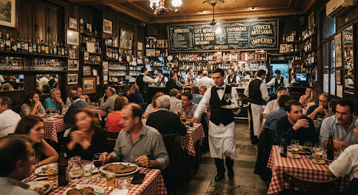
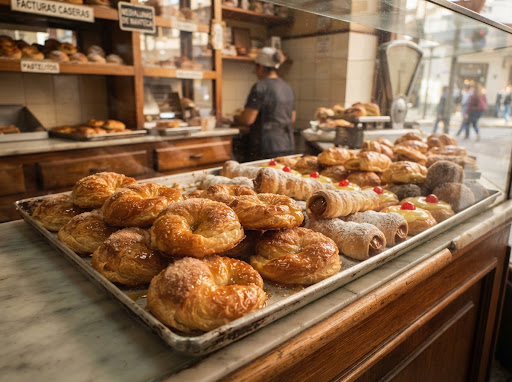
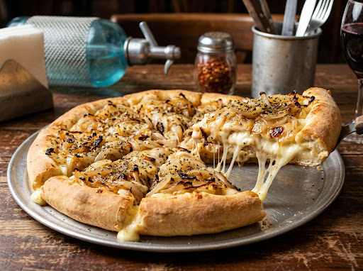
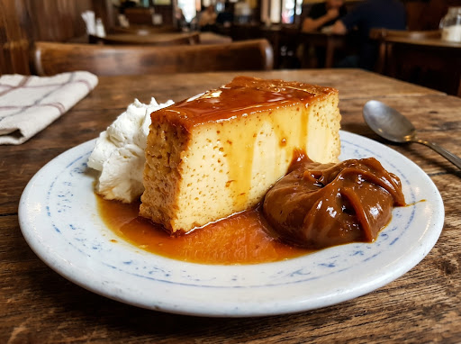

IMPERIO
Desde el primer cortado de las seis hasta la última copa de vermú de la madrugada.
Av. Corrientes 5206 ✦ Abierto de 6 a 3 hs ✦ Villa Crespo
Más de medio siglo alumbrando las tertulias de Villa Crespo.
En la bifurcación viva donde Corrientes late sin tregua, Imperio abrió sus puertas con el clamor de los tranvías y la bohemia arrabalera de 1954. Levantamos la persiana antes de que despunte el primer subte en la estación Malabia y no la cerramos hasta que el último dramaturgo, milonguero y noctámbulo ha apurado su copa de vermú de la madrugada.
“Acá no se mira el reloj: se escucha el tintinear de las cucharitas sobre la loza gruesa, se contempla el sifón azul sobre el mármol y se aprende a vivir sin prisa.”
Mozos de oficio con chaquetilla inmaculada, mesas Thonet de madera curvada que guardan confidencias de varias generaciones y una barra de estaño pulido donde el tango no es nostalgia, sino el pulso cotidiano de la esquina más generosa de Buenos Aires.

Salón Central & Vereda Histórica
Av. Corrientes & Malabia · Villa Crespo
De 6 a 3 // El Ritmo Porteño en Cinco Tiempos
Desde el primer café con leche con medialunas recién horneadas hasta la última copa de vermú de la madrugada. Elegí un momento del día:

Desayunos Tradicionales
bakery_diningClásicos Inolvidables del Mostrador
Recetas transmitidas por generaciones de maestros pizzeros, fiambreros y baristas porteños.
Café con Medialunas
$4.200Medialunas de manteca doradas al almíbar casero, café expreso en pocillo y copita de agua con gas.

Receta 1954Fugazzeta al Molde
$14.500Masa de fermentación lenta, cebolla confitada al orégano fresco y corazón desbordante de cuartirolo.
 Para Compartir
Para Compartir
Milanesa Napolitana
$16.800Bife de bola de lomo tiernizado, tuco artesanal, jamón natural cocido y gratén de muzzarella con papas bastón.

12 HuevosFlan Casero Mixto
$4.600Horneado a baño María con caramelo oscuro, copete generoso de dulce de leche colonial y crema fresca batida.
Asegurá tu mesa en la esquina
Completá los datos y te derivamos al WhatsApp oficial de reservas con el mensaje listo para enviar.
El Elogio de Quienes Viven la Esquina
“El mejor cortado de la avenida Corrientes. La espuma densa, el sifón helado al lado y la atención respetuosa de los mozos que conocen tu pedido con solo mirarte al entrar.”
Hernán B.
Vecino de calle Gurruchaga · Habitué matinal
“Ir a Imperio después del teatro o de una función de trasnoche es revivir la verdadera noche de Buenos Aires. Su picada con jamón crudo y el vermú tirado no tienen competencia en la zona.”
Valeria F.
Actriz & habitué de Villa Crespo
“Las medialunas de las 6:30 de la mañana salen calientes y perfuman toda la cuadra de Malabia. Es un ritual sagrado e innegociable antes de bajar al subte B.”
Santiago M.
Arquitecto del barrio
Te esperamos en la esquina de Corrientes y Malabia.
Frente al pulso constante de la Avenida, a solo pasos de la boca de la estación Malabia (Línea B de subterráneo). Siempre hay una mesa libre esperando tu llegada.
Dirección Postal
Av. Corrientes 5206 (esquina Malabia), Villa Crespo, Buenos Aires
Horario de Atención
Domingo a Jueves: 06:00 a 02:00 hs
Viernes y Sábados: 06:00 a 03:00 hs (Cocina y barra continuas)
Teléfono Directo
+54 11 4854-4864
Subte B · Estación Malabia
A 50 metros sobre la vereda par